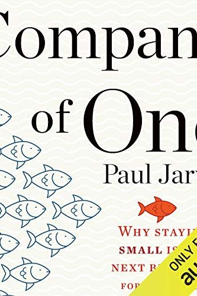

Library › Business & Startups
Company of One — Summary & Key Lessons

Why staying small is the next big thing — question growth, build enough, and own your whole life.
📖 OPEN THE FULL INTERACTIVE BREAKDOWN →🌐 Read it in Hindi, Hinglish, Gujarati, Tamil & 22 more languages — free, with audio.
💡 The Big Idea
Silicon Valley's default — raise, scale, exit — treats growth as oxygen. Jarvis's heresy: for most people, growth is a TAX — more employees, more overhead, more meetings, more risk, less of the actual work you loved — and a COMPANY OF ONE (a business that deliberately QUESTIONS growth, whatever its headcount) is the saner design. Its four traits: RESILIENCE (adaptable generalists survive shocks that kill leveraged giants), AUTONOMY (control over time and choices — the actual point of quitting your job, routinely re-lost by founders who accidentally build worse jobs), SPEED (small pivots in days; committees pivot in quarters), and SIMPLICITY (every system small enough to understand). The operating rules: define ENOUGH numerically (profit target, hours target — then STOP optimizing beyond it and bank the freedom); prefer PROFIT FROM DAY ONE over funded growth (funding sells your autonomy first and your company second); scale with SYSTEMS and AUDIENCES, not headcount (one great newsletter outleverages three salespeople); and obsess over EXISTING customers — retention economics beat acquisition economics everywhere except in pitch decks. Success isn't a bigger company. It's a better Tuesday.
🧠 The 6 Key Lessons
Lesson 1: Question Growth: Bigger Is a Choice, Not a Law
Part 1: Begin — Staying Small as an End Goal
The reflex 'we must grow' deserves the question every other business decision gets: WHY? Growth adds revenue AND adds payroll, management layers, office costs, coordination drag, and fragility — often the founder's income and freedom both DROP as topline rises (the ₹5Cr agency whose owner earns less and worries more than when it was ₹80L and three people). Jarvis's alternative math: revenue is vanity; PROFIT PER OWNER-HOUR is the honest metric, and it frequently peaks at surprisingly small scale. The trap mechanism: each growth increment feels locally logical (more leads! need a hire! need an office! need more leads to cover the office!) — a ratchet that only turns one way, until the founder is the unpaid operations manager of a machine that exists to feed itself. Companies of one break the ratchet by setting an UPPER BOUND on purpose: this size, this team (maybe zero), this workload — and converting every efficiency gain after that into margin or free time instead of headcount. Growth remains available — as a tool for specific problems, never as the default religion.
📖 Example: Jarvis himself: a web designer to major clients (Microsoft, Mercedes) who spent 20 years REFUSING to become an agency — no employees, no office, working from a forest on Vancouver Island, earning more than agency-owner peers who managed 15 salaries and slept… Read the full example →
⚡ Do this: Compute your real metric: last year's profit ÷ hours actually worked. Then write what you'd want DOUBLE of — money, or hours back? Design this year's plan around that answer instead of around revenue growth by default.
Lesson 2: Define Enough — Then Bank the Surplus as Freedom
Part 2: Define — The One Customer, Enough
A company of one runs on a defined ENOUGH: the profit number that funds your actual desired life (write the life down first, price it honestly — most people discover it costs less than the fantasy) plus buffer. Above that number, more revenue is OPTIONAL — and the surplus capacity becomes choice: fewer clients (fire the nightmare ones — the bottom 20% of clients consume 80% of the misery), higher prices with fewer projects, shorter weeks, longer holidays, or pure savings runway (which itself compounds into negotiating power: the freelancer with 12 months' runway never takes bad work, which upgrades their portfolio, which raises their rates — the anti-desperation spiral). The discipline this requires is social, not financial: enough-based businesses look like 'failure to scale' at reunions and on LinkedIn; Jarvis's reframe — you're not failing to build an empire; you're succeeding at building a LIFE, using a business as the tool. The empire builders are welcome to their standing meetings.
📖 Example: Tom Fishburne, 'the Marketoonist': left a corporate marketing VP track to draw business cartoons — deliberately kept it tiny (himself, his wife managing operations), turns away most opportunities, earns multiples of his old salary working from home with… Read the full example →
⚡ Do this: Write your Enough spec: monthly profit target (from real life costs + 20%), max working hours/week, minimum holiday weeks. Then list your current clients/projects — flag everything that exists only to exceed the spec, and plan the exit of the worst one this quarter.
Lesson 3: Scale With Systems and Audience, Not Headcount
Part 3: Maintain — Scalable Systems, Teaching
When demand exceeds your enough-capacity, the growth-religion answer is hiring. The company-of-one answers, in order: RAISE PRICES (the most under-used lever in small business — halve the clients, keep the revenue, double the quality); PRODUCTIZE (convert custom labor into repeatable offerings — the audit becomes a fixed-price package, the consulting becomes a course/template/tool that sells while you sleep); AUTOMATE (the boring 40% of every service business — intake, scheduling, invoicing, onboarding — is software's job); and build an AUDIENCE by TEACHING (Jarvis's core marketing: give away your expertise freely — newsletters, guides, workshops — because teaching builds trust at scale, and trust is the only marketing a tiny company needs; your audience is a salesforce you don't pay). Note what every lever shares: they add LEVERAGE without adding HUMANS-TO-MANAGE — the failure point of small businesses isn't usually the market; it's the founder becoming a manager against their will and losing the craft that made the business work.
📖 Example: The book's quiet heroes are productized freelancers: the designer who turned bespoke branding chaos into a fixed-scope, fixed-price 'brand in two weeks' offer — doubling effective hourly income while killing scope-creep meetings; the accountant whose free… Read the full example →
⚡ Do this: Pick your lever this quarter: (a) raise prices 25% on the next three quotes, (b) design one fixed-scope productized offer from your most-repeated work, or (c) start the weekly teach-everything newsletter. One lever, ninety days, before even thinking the word 'hire.'
Lesson 4: Existing Customers Are the Growth Strategy
Part 3: Maintain — Relationships That Matter
Acquisition is the expensive religion's expensive sacrament: industry averages put acquiring a new customer at 5-25x the cost of keeping one, yet the standard playbook celebrates the NEW logo and neglects the paying veteran. The company of one inverts: obsess over the customers you HAVE — over-deliver on the promise (under-promise deliberately to create the margin), treat support as marketing (every interaction is a future referral or a future warning-review), share the upside (referral thanks, loyalty pricing, early access), and practice radical honesty when things break (owning a mistake fast converts angry customers into loyalists more reliably than perfection ever built). The math that makes this strategy sufficient: a small business needs surprisingly few devoted customers to hit ENOUGH (a thousand true fans, often far fewer for services) — and devoted customers compound: they stay (recurring revenue), expand (buy the next thing untested), and recruit (word-of-mouth is the only channel with negative cost). Churn, not slow acquisition, is what actually kills tiny companies — and churn is a relationship problem wearing a metrics costume.
📖 Example: Jarvis's software case: his tiny course/software businesses ran near-zero paid acquisition for years — growth came almost entirely from alumni bringing colleagues, because the products over-delivered and support emails got personal answers from the actual… Read the full example →
⚡ Do this: This month, run the retention audit: message your last 10 customers personally asking one question ('what almost stopped you from buying / what would make this twice as valuable?'). Fix the #1 answer. Then build one over-delivery into your standard offering that costs you little and surprises everyone.
Lesson 5: Start With Enough: The Life You Want Is the Business Model
Part 2: The Mindset
Jarvis's inversion of startup logic: instead of asking 'how big can this get?', ask 'how much do I actually need — and what's the smallest business that provides it?' Define 'enough' honestly (income, autonomy, time) and let that number, not investor fantasies, shape your company. The company of one treats growth as optional and freedom as the actual product. This reframe rescues entrepreneurs from the treadmill of scaling for its own sake: the business becomes a tool for a life, not a life-consuming machine. Enough is not a compromise; it is a design decision most founders never dare to make.
📖 Example: Jarvis profiles consultants and makers who deliberately capped their client count to protect their weeks — and found their income stayed stable or grew, because scarcity increased demand and freed time for higher-value work. The cap was the strategy. Read the full example →
⚡ Do this: Write your honest 'enough': the monthly income, weekly hours and autonomy level that would make you content. Design your next business decision around that number, not growth for growth's sake.
Lesson 6: Be the Product: Your Brand Is the Moat
Part 3: The Strategy
The company of one's competitive advantage: you. Jarvis argues that personal branding — sharing your thinking, your process, your personality — builds a moat that bigger competitors can't copy, because they can't be you. The solo business that publishes its ideas becomes the obvious choice when the buyer needs help; the person behind the product is the trust layer no feature set can replicate. The practice: document what you learn, share your opinions, show your face. Every piece of content is a deposit into a brand account that pays interest in the form of customers who arrive already trusting you.
📖 Example: Jarvis shows how his own writing and podcasting made his consulting practice unnecessary — clients came to him already sold on his thinking, reducing sales cycles from months to days. The brand he built while working was the business he later became. Read the full example →
⚡ Do this: Publish one piece of your thinking this week — a post, a video, a note — about something you've learned in your work. Start the deposit habit.
✅ 5-Step Action Plan
- Measure profit per owner-hour, not revenue — and question every 'we must grow' reflex.
- Write the Enough spec (profit, hours, holidays) and stop optimizing past it.
- Scale with the four levers — prices, productization, automation, teaching — before headcount.
- Spend acquisition energy on retention: personal support, over-delivery, shared upside.
- Bank surplus as runway; runway buys the 'no' that upgrades every future 'yes.'
⚠️ When This Doesn't Work
Jarvis's 'stay small, stay profitable' is the sanest business philosophy of the decade — and Stayzilla is the reminder that scale pressure comes from outside too: a founder who wanted a small, sustainable hospitality business, pushed by investors and competitors into expansion, burned through the model and shut down, leaving vendors unpaid. The company-of-one philosophy works when you control the cap table; the moment you take money that demands growth, your 'stay small' is a memory. Jarvis underweights that the size decision is often made by your investors, not you.
💀 The Graveyard Proves It
🛏️ Stayzilla — Burned Cash for Growth in 900 Cities, Profitable in None. Burn: $34M raised; shut down mid-fight. Read the full case study →
💬 Best Quotes from Company of One
- “Staying small doesn't have to be a stepping stone — it can be the destination.”
- “Growth, as a primary focus, is a dangerous strategy for most businesses.”
- “Enough is the antithesis of growth for growth's sake.”
Interactive version: mark lessons as read, listen in your language, share quote cards.